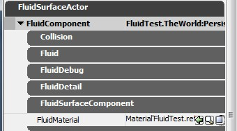
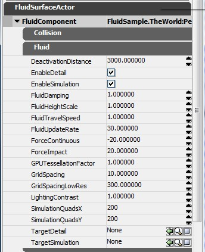

流体表面指南
概述
流体表面是平面物体，它通过上下移动平面上的顶点 和/或 通过使得材质中应用的法线贴图进行动画来产生形象的波浪效果。每个功能仅影响整个流体的一个很小的长方形部分。通常，这些长方形将聚集在主要玩家的周围，流体表面的其它部分将仍然保持平坦并且不会受到任何力的影响。作为设计人员，您应该使得这些长方形保持尽可能的大，并且尽可能地进行精细地细分，但是仍然可以维持较好的内存和性能。
流体表面一般用来模拟水。
有两种类型的流体表面： FluidSurfaceActor(流体表面Actor) 和 FluidSurfaceActorMovable（可移动的流体表面Actor）。它们的唯一不同是后面的这种类型可以通过Matinee到处移动流体表面。

Simulation(仿真)和Detail(细节) 子网格
正如上面所提到的，仅FluidSurfaceActor的某一个部分有一些细节。其它的部分仅是一个平坦的四方形。Simulation(仿真)和Detail(细节)子网格将会在FluidSurfaceActor中到处移动，尝试使它们自己聚集在它们各自的“目标”周围。当 TargetSimulation(目标仿真) 和 TargetDetail(目标细节) 属性为空时，它们将聚集在玩家周围。
通过打开 bShowSimulationPosition(显示仿真位置) 或 bShowDetailPosition(显示细节位置) 属性，您可以看到Simulation(仿真) 或 Detail(细节)子网格在FluidSurfaceActor中所处的位置。它们将显示为长方形。既然它们围绕并跟随一个目标运动，您或许会想在游戏中或者在PIE中来测试这个现象。您可以通过使用"set" exec命令来在游戏中打开这些仿真或者细节子网格。比如： set fluidsurfacecomponent bShowSimulationPosition 1
因为Simulation(仿真)网格使用顶点动画来产生可视化的波浪和波纹，所以子网格将会被进行高度地细分并且它包含很多顶点。Detail(细节)网格仅围绕这一个法线贴图移动，并且不需要任何额外的顶点。
Simulation(仿真)网格是在CPU上通过一个单线程来进行仿真处理的。Detail(细节)网格是纯粹地在GPU上通过使法线贴图产生动画来进行仿真的。
激活和非激活
流体可以被激活也可以取消激活。在激活状态，波浪和波纹进行仿真，并且流体将会用尽所需的内存及性能。在非激活状态下，流体仅使用少量的内存，并且除了使用指定的材质渲染一个静态平面四方形网格物体外，它们没有额外的性能消耗。
流体以非激活状态启动，但是如果玩家在DeactivationDistance (非激活距离)内(从最近的FluidSurfaceActor的边缘到非Simulation或Detail的边缘的测定值) 并且在Simulation(仿真)或Detail(细节)网格内的某个点上应用了一个力时,流体将自动地被激活。应用到这些子网格外部的任何力将会被简单地忽略，并且流体仍然处于非激活状态。
一旦流体被激活，在玩家移到DeactivationDistance之外10秒钟后它将自动变为非激活状态，不再有任何力应用到Simulation(仿真)或Detail(细节)网格上，并且流体已经处于平静状态。
生成波浪
在流体中有两种方式用于生成波浪： 手动的 FluidSurfaceInfluenceActors(流体表面影响Actor)? 或者自动物理交互。自动交互通过正常的Touch事件进行处理(这也可以在Kismet中进行处理)。无论何时当actor触摸一个流体平面时，都会对其应用一个冲力。冲力的强度取决于ForceImpact属性、以及触摸actor的大小和速度。当触摸actor在流体平面上到处移动时，将会应用一个不同(持续)的力。这种类型的交互使用FluidContinuous属性来决定持续力的强度。
注意TestRipple(测试波纹)使用FluidImpact(流体冲力)属性作为它的冲力(当TestRippleFrequency大于0的时候)。当TestRippleFrequency为0时，它将会使用ForceContinuous属性中的值应用一个持续的力。
任何应用到Simulation (仿真)或Detail(细节)长方形外的某个位置的力都将被忽略。
一个提高视觉质量的通用技巧是，较大的冲力影响半径将会生成更好的更加平滑的波浪。较大的半径将会使仿真具有稳定化的效果，因为这个影响了更多的单元。
创建
在通用浏览器中的"Actor Classes(Actor类别)"标签下选择FluidSurfaceActor。在视口中世界的某个地方右击并选择"在这里添加FluidSurfaceActor "， 可以使用控件或者点击F4(或者双击那个actor、或者右击并选择"FluidSurfaceActor 属性")来确定这个actor的位置及重新调整它的大小。
FluidSurfaceActors的属性有4类： Fluid(流体)、 FluidDebug(流体调试)、FluidDetail(流体细节)以及FluidSurfaceComponent(流体表面组件)。当检查属性设置时，请一定要记住流体有两种产生动画的方式- 上下的移动顶点 和/或 使法线贴图进行动画。前一种方法通常被认为是"simulation(仿真)"而后一种方法通常被指为“detail(细节)”。注意仿真是在CPU(通过单线程)上进行处理而细节是在GPU上进行处理的。
属性： FluidSurfaceComponent(流体表面组件)
这个类别包含了流体的材质属性，这是您为了获得完整的有用的流体所必须设置的唯一的一个属性。
- FluidMaterial (流体材质)
- 用于渲染流体的材质。
这可以包括环境湍流的滚动的扭曲贴图以及用于访问Detail(细节)贴图的专用的FluidNormal节点。
注意材质必须启用 bUsedWithFluidSurfaces 复选框!
|
|  |
属性： Fluid(流体)
这些属性控制仿真(顶点动画)以及在整体上控制流体。
- DeactivationDistance(非激活距离)
- 玩家和最近的流体边缘的距离，在那个距离处流体将处于非激活状态并且将作为简单的平面方块进行渲染。
- EnableDetail(启用细节)
- 启用/禁用 法线贴图的细节贴图的动画。
- EnableSimulation(启用仿真)
- 启用/禁用 仿真(顶点动画)。
- FluidDamping(流体阻尼)
- 流体仿真中波浪振幅的衰减量(0.0-30.0)。
- FluidHeightScale(流体高度缩放比例)
- 波浪高度的缩放比例 – 较大的值会在仿真中产色很难过较高的顶点波浪。
- FluidTravelSpeed(流体运行速度)
- 仿真波浪的运行速度因数。这可以用于减慢波浪。
- FluidUpdateRate(流体更新速率)
- 仿真的更新速率，既每秒钟更新的次数。增加这个值将会使得波浪传播的更快但是会降低性能。
- ForceContinuous(持续的力)
- 持续交互作用的力的系数。(和突然的冲力相对)。
- ForceImpact(冲力)
- 瞬间交互作用的力的因数。
- GPUTessellationFactor(GPU细分因数)
- GPU应该把流体网格细分到的程度。(仅用于完全支持GPU细分的平台上)。
- GridSpacing(网格间隔)
- 仿真网格单元的大小(以世界空间的单位计算)。
- GridSpacingLowRes(低分辨率网格间隔)
- 当流体处于非激活状态时，流体将自动地描画一个低分辨率的网格。当流体是半透明时，需要设置一个合理的值来使顶点雾化有效。如果它的值太低，GridSpacingLowRes 将会被限定(导致产生65000多个顶点)。
- LightingContrast(光照对比)
- 增加这个值将会通过扩大流体顶点法线的曲率来增加光照的对比度。
- SimulationQuadsX(仿真方块数量X)
- 在仿真网格中的顶点方块的数量(沿着X轴)。
- SimulationQuadsY(仿真方块数量Y)
- 在仿真网格中的顶点方块的数量(沿着Y轴)
- TargetDetail(目标细节)
- 细节贴图将要围绕其聚集的Target(目标)actor。如果没有提供TargetDetail(目标细节)，细节贴图将会围绕玩家聚集。
- TargetSimulation(目标仿真)
- 仿真网格将要围绕其聚集的Target(目标)actor。如果没有提供，仿真网格将会围绕玩家聚集。
|
|  |
属性： FluidDetail(流体细节)
这些属性仅影响Detail(细节)法线贴图。
- DetailDamping(细节阻尼)
- 和FluidDamping 一样，但是它用于Detail(细节)贴图。
- DetailHeightScale(细节高度缩放值)
- 和FluidHeightScale一样，但是它用于Detail(细节)贴图。增加这个值将会使得FluidNormal的对比更加明显。
- DetailResolution(细节分辨率)
- 细节贴图的分辨率。贴图是正方形。
- DetailSize(细节大小)
- 流体中的Detail (细节)网格的大小，以世界空间的单位计算。细节网格是正方形。
- DetailTransfer(细节转移)
- 这个因数将调制应用到(转移到)细节贴图上的任何力。它仅当您在FluidSurfaceActor 上同时使用Simulation (仿真)和Detail (细节)功能时才有用。
- DetailTravelSpeed(细节运行速度)
- 和FluidTravelSpeed一样，但是它用于Detail(细节)贴图。
- DetailUpdateRate(细节更新速率)
- 和DetailUpdateRate一样，但是它用于Detail(细节)贴图。
|
|  |
属性： FluidDebug(流体调试)
这是属性在设立并调整FluidSurfaceActor时使用。它们在FINAL_RELEASE(最终发行)版本中没有影响。
- bPause(暂停)
- 打开这项，将会把仿真冻结在原处。
- bShowDetailNormals(显示细节法线)
- 描画一个覆盖图，它显示了屏幕上的细节贴图。
- bShowDetailPosition(显示细节位置)
- 显示流体中作为一个长方形的Detail(细节)网格的位置。
- bShowFluidDetail(显示流体细节)
- 把细节贴图显示为平面，但是在底层仍然保持动画状态。
- bShowFluidSimulation(显示流体仿真)
- 把仿真显示为平面几何体，但是在底层仍然保持动画状态。
- bShowSimulationNormals(显示仿真法线)
- 把仿真法线可视化地显示为线。
- bShowSimulationPosition(显示方针位置)
- 限制流体中的一个长方形仿真网格的位置。
- bTestRipple(测试波纹)
- 打开/关闭Test Ripple(测试波纹)功能。
- bTestRippleCenterOnDetail(测试波纹处在细节中心)
- 是否把Test Ripple (测试波纹)放在细节网格的中心。
- NormalLength(法线长度)
- 可视化的仿真法线的长度。
- TestRippleFrequency(测试波纹的频率)
- 在测试波纹上的每个波峰之间的秒数。0将会使测试波纹连续。
- TestRippleRadius(测试波纹半径)
- 测试波纹的半径，以世界空间单位计算。
- TestRippleSpeed(测试波纹速度)
- 测试波纹的角速度。
|
|  |
技巧及最佳实践
我们推荐对于较大的表面使用顶点动画而对于较小的表面比如水坑则使用法线贴图动画。同时使用这些功能在进行调整时是非常麻烦的，并且所浪费的内存及性能的代价仅能换来较小的收获。
尽管FluidSurfaceActor可以像您想象的那么大，但使用大的仿真或者细节子网格将会用掉大量的内存并且会降低性能。使用尽可能大的GridSpacing(网格)的关键是不要损害流体平滑性。GridSpacing的值以一个较高的值开始(比如50)，然后逐渐地使它变小直到您对所获得的质量满意为止。然后使用SimulationQuadsX和SimulationQuadsY来调整仿真网格的大小直到您获得了的活动长方形和您所需要的一样大为止。尽管如此，使用尺寸大于300x300的网格将会占用很多的内存。
打开"Test Rippple(测试波纹)"功能来在编辑器中调整流体属性，并且使用实时更新。测试波纹将会激活流体，所以您可以对您的设置的质量作出评判。请记住要在没有损害太多质量的前提下尽可能地使用较低的设置，从而保证保持内存和性能消耗较低。
波浪的运行速度受到分辨率 (GridSpacing/SimulationQuadsX/SimulationQuadsX 或 DetailSize/DetailResolution) 、FluidUpdateRate/DetailUpdateRate and FluidTravelSpeed/DetailTravelSpeed的影响。一旦您为适当平滑的波浪设置了分辨率，您会想使用FluidTravelSpeed/DetailTravelSpeed来调整波浪速度。您应该尝试保持更新速率在30左右(较低会使得动画抖动，较高会消耗性能)。
您应用到流体的任何力的半径都要太小。较大的半径将会使得波浪看上去比较平滑。
控制台命令
- togglefluids 打开/关闭所有的流体仿真，并且释放它使用的几乎所有的内存。这个命令可以用于比较内存使用和性能下降。
- stat fluids 将会显示内存和性能统计数据。请记住统计数据根据平台的不同是有很大变化的!